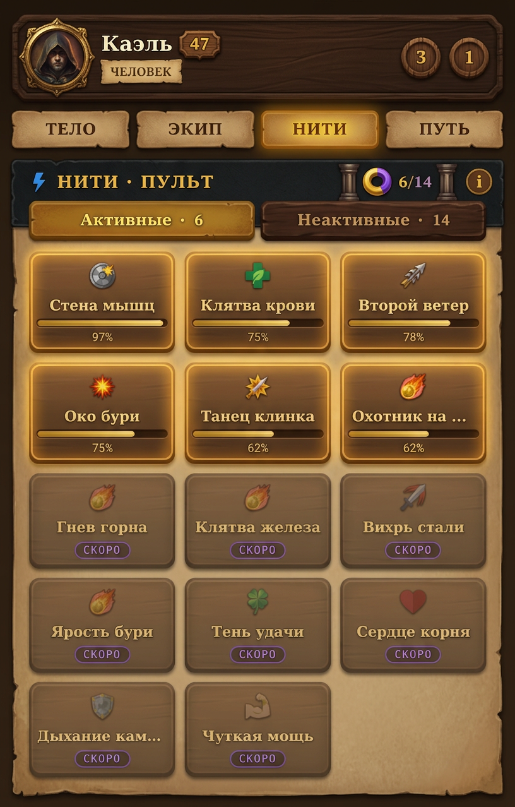
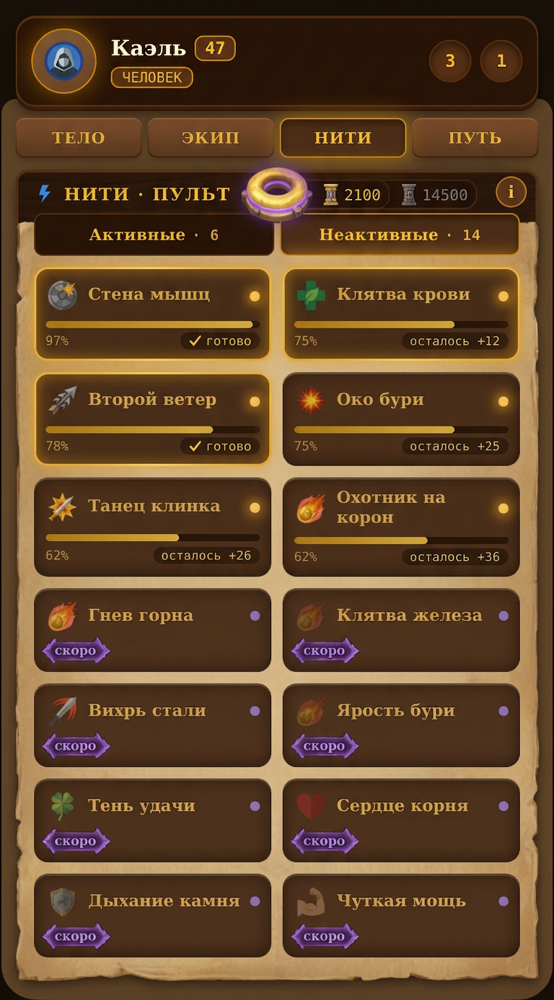
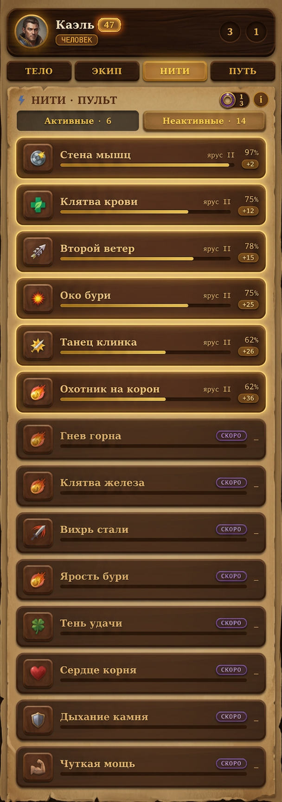
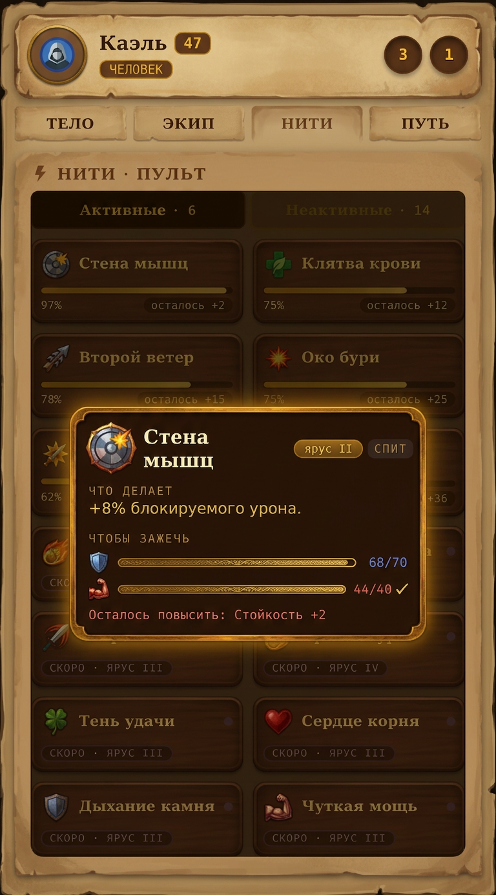

Вариант 1 · Плотная сетка 3×Nмаксимум карточек, имя в строку, полоса + %
Вариант 2 · Карточки 2 колонкиимя в 2 строки, чип «осталось +N» / «✓ готово»
Вариант 3 · Горизонтальные строкииконка-плитка, имя + полоса в строку, % и «+N» справа
Модалка нитичто делает + два столпа с прогрессом + осталось повысить